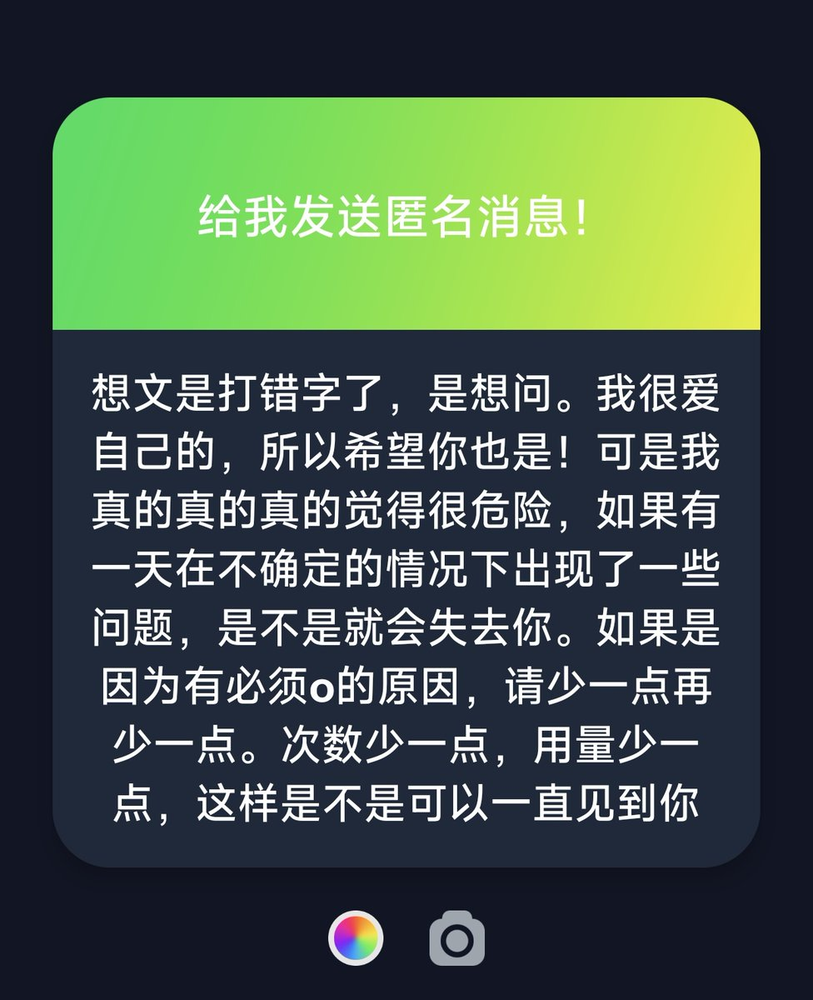

@jiuyouforwhite 可惜长期用药会变傻，不然就没有顾忌了，我这里情况很特殊，一切都是靠自己脑子得来的，脑子变傻的话比自杀更恶心，只能用最小的联用适量，就算渴望死亡也不想用个坏掉的大脑，两边超级难取舍的，虽然结果只会是死，我宁愿在大脑没有损伤的情况下自*，一边研究一边适量，还不错但感觉好地狱


谢谢这份问答，更谢谢有你。危险是对的，od人宿命即是如此，我们本就渴望死亡，也许有一天发生意外之后会顺手推舟选择死亡吧。所以我想为大家做些什么，即使是微不足道的一些帮助。我嗑药讲究科学和适量两个原则，不会随便嗑随便联用随便续药，也希望大家都这样
所以你不会失去我，我一直都在你身边。 https://t.co/PcYcRDx4GZ
所以你不会失去我，我一直都在你身边。 https://t.co/PcYcRDx4GZ